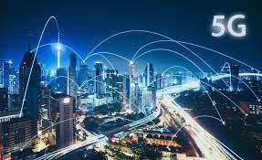
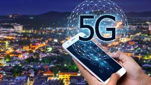
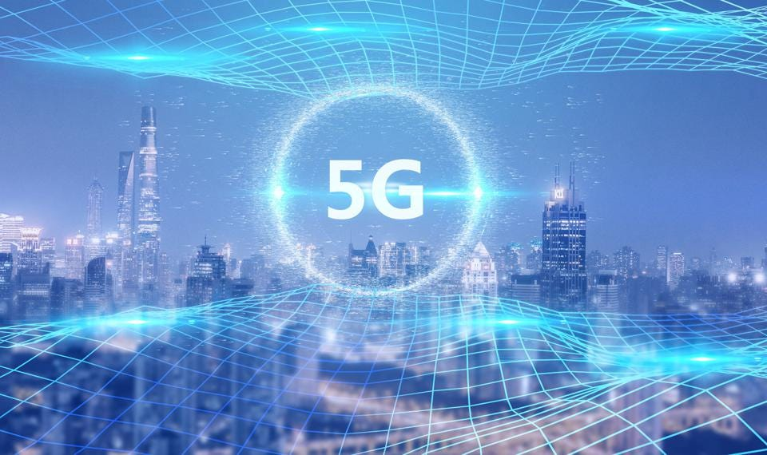
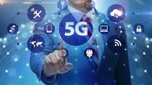
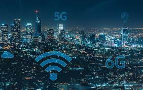
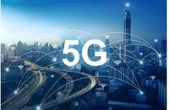
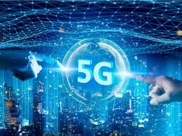
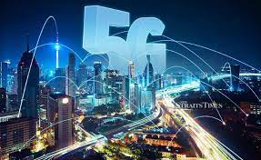

Türkiye'nin ilk 5G bulut uygulamasını hayata geçirmekten gurur duyuyoruz ve bu uygulamanın Huawei tarafından "En İyi 5G Bulut Dikey Endüstri Uygulamalarından" biri olarak derecelendirilmesinden daha da gurur duyuyoruz. Yeni nesil sabit ve mobil ağ teknolojilerinin eğitim sektörüne daha fazla katkı sağlayacağına ve bu teknolojilerin aktif kullanımının Türkiye'de verimliliği büyük ölçüde artıracağına inanıyoruz. Türk Telekom'un PİLOT İş Hızlandırma Kuluçka Programına katıldık ve bundan da çok memnunuz. 5G eğitim gösterimi ile Türk Telekom'un 5G başarılarının takdir ve ilgi görmesi bizleri çok gururlandırıyor ve farklı 5G uygulamalarını daha fazla keşfetmemiz için bize ilham veriyor.

Türkiye'ye ve kullanıcılarına en gelişmiş sabit ve mobil ağ teknolojilerini sunmayı hedefliyoruz. Bu amaçla, bu alana aktif olarak yatırım yapıyor ve önde gelen Türk ve küresel şirketlerle yakın işbirliği içinde çalışıyoruz. Bu Mobil Dünya Kongresi sırasında, ortaklığımızı daha da güçlendirmek için Huawei ile bir MoU imzaladık. İki taraf ortaklaşa 5G tabanlı ürün ve hizmetler geliştirerek Türkiye'ye en ileri teknolojileri sunacak ve böylece Türkiye'nin dijital dönüşümünü hızlandıracak.
5G gibi teknolojik yenilikleri şehirleşme, ulaşım, sağlık, eğitim, tarım, enerji ve eğlence alanlarında Türkiye'nin kalkınmasına daha fazla katkı sağlamak için arıyoruz. Bu amaçla, Huawei ile bir MoU imzaladık ve ağ geliştirme, test etme çalışmalarımıza dayalı olarak 5G uygulamalarını dağıtacağız.

Türkiye'nin ilk 5G bulut uygulaması olan Huawei ile ortaklaşa kurduğumuz 5G bulut bağlantısı üzerinden VR ve AR eğitim içeriklerinin uzaktan erişimini başarıyla test ettik. Huawei, dünyanın lider ICT teknolojisi çözümleri sağlayıcısıdır. Barselona'da düzenlenen bir ICT sektörü etkinliği olan Mobile World Congress'te bu başarı, Huawei'nin faaliyet gösterdiği ülkedeki "En İyi 5G Bulut Dikey Endüstri Uygulamaları"ndan biri seçildi.

5G, zengin uygulamalara ve trendlere sahiptir. En umut verici trendlerden üçü şunlardır: Gelişmiş Mobil Geniş Bant (eMBB), Ultra Güvenilir Düşük Gecikmeli İletişim (URLLC) ve Büyük Makine Tipi İletişim (mMTC). Esasen, eMBB daha iyi mobil veri bağlantıları sağlar. Buna, geleneksel sabit geniş bant ile rekabet etmek için sabit kablosuz erişimin kullanılması dahildir (Piyasa Trendleri'nde açıklandığı gibi).
5G, endüstri uygulamalarının sınırlarını genişletiyor

Bilgi çağında bir fabrika sadece betonarme değil, dokuma kablolardan da yapılıyor. Ancak, mobil iletişim trendi altında, bu kablolar sadece fabrika işletimi ve bakım ve güvenlik üretimi için sorun yaratmakla kalmıyor, aynı zamanda maliyetleri ve esneklikleri de günümüz üretim ihtiyaçları ile uyumlu değil. 5G şu anda kablolu iletişime tek alternatiftir ve düşük gecikme süresi ve yüksek güvenilirliği fabrikaların dijital dönüşümünü büyük ölçüde destekleyecektir.

5G, fabrikanın WAN'ını yerel alan ağına, buluta ve cihazlara bağlayarak en iyi işi yapmalarını sağlayarak "iğneyi açar".
5G teknolojisinin yenilik için yüksek toleransı vardır: son derece yüksek kapsama alanı ve kapasite; sesli aramalarda, geniş bant bağlantılarda ve uygulamalarda yüksek ölçeklenebilirlik; yüksek hız ve düşük gecikme; uç bilgi işlem ve bulut bağlantı çözümleri; esnek Ağ oluşturma ve isteğe bağlı özel ağ, endüstri ile derinden entegre olacak ve endüstriyel müşteri uygulama senaryolarına uygun kişiselleştirilmiş ağ, fabrikanın akıllı yükseltmesini gerçekleştirmek için üretim süreci ve üretim süreci ile derinlemesine entegre edilecektir.

Ayrıca, iletişim hizmeti sağlayıcılarının yeni iş genişletme pazarına girmelerine yardımcı olabilecek anahtar teknoloji, ağ dilimlemedir. Birçok dikey sektördeki kuruluşların farklı ağ gereksinimleri vardır ve ağ dilimleme, bu kuruluşlara özelleştirilmiş hizmetler ve kullanım senaryoları sağlamanın temel bir yolu haline gelmiştir.
"Ağ yol baskısını" hafifletmek için bir "dağıtım kanalı" olarak, ağ dilimleme teknolojisi, ağdaki farklı hizmetlerin gereksinimlerine göre kaynakların rasyonel dağılımını gerçekleştirebilir.Bu nedenle, operatörler kullanıcılara daha kişiselleştirilmiş hizmetler sunabilir ve kullanıcı deneyimini büyük ölçüde iyileştirebilir. . . . Ericsson kısa süre önce 5G cihazları için birden çok özelleştirilmiş ağ dilimi sağlayan "Dinamik Ağ Dilim Seçimi" çözümünü piyasaya sürdü.
Bu çözümle operatörler, hizmetleri 5G ağlarında esnek bir şekilde ayırabilir ve trafik yönünü iyileştirebilir, böylece tek bir cihazın hizmet kalitesini en üst düzeye çıkarabilir. Kullanıcılar, temel kişisel kullanıcı hizmetleri için evrensel mobil geniş bant ağ dilimleme, oyun gibi hizmetler için özel ağ dilimleme ve kurumsal düzeydeki uygulamalar için yüksek güvenlikli ağ dilimleme gibi farklılaştırılmış hizmetlerden yararlanacak.
İletişim hizmeti sağlayıcılarının yalnızca daha yüksek düzeyde gelir ve maliyet tasarrufu elde etmelerini sağlamakla kalmaz, aynı zamanda geleneksel tedarikçi rollerinden 5G hizmetlerinin sağlayıcılarına dönüşmelerini ve potansiyel olarak sonunda bir dijital değer yaratıcısı olmalarını sağlar.
5G dönemi platformumuza dahil edilen tüm yeteneklerin, geliştirmek isteyen geliştiriciler ve işletmeler tarafından en iyi performansı, en iyi toplam sahip olma maliyetini (TCO) ve nihayetinde kullanıcılarımız tarafından kullanılabildiğinden emin oluyoruz. Bu yıl ve önümüzdeki yıllarda performans.
5G, sürdürülebilir kalkınmaya güç veriyor

2G'den 5G'ye bilgi ve iletişim teknolojisi devrimi üretimi derinden etkilerken, dünya kaynaklarının tüketimi de her geçen gün artıyor. Bu nedenle teknolojik inovasyon çok önemli hale geldi. Son on yılda, küresel mobil ağın veri aktarım hacmi 300 kattan fazla arttı ve enerji tüketimi de %60'tan fazla arttı.
Hiç şüphe yok ki, iletişimin doğal çevreye verdiği zararı daha da azaltmak için teknolojik yeniliklere her zamankinden daha fazla ihtiyaç var.
Araştırmalar, mobil iletişim ağlarını çalıştırmanın mevcut küresel yıllık enerji maliyetinin yaklaşık 25 milyar ABD doları olduğunu gösteriyor. Maliyet ve karbon emisyonları açısından enerji tüketimi, mevcut mobil iletişim endüstrisinin karşı karşıya olduğu en büyük zorluklardan biridir. 5G, güçlü ağ yetenekleriyle kurumsal fabrikaların, lojistik ağların, enerji şirketlerinin ve diğer kurumların daha verimli, bilinçli ve daha amaçlı çalışmasına yardımcı olarak küresel sürdürülebilirliği sağlayabilir.
Teknolojik yenilikler daha parlak bir geleceği şekillendirmeye yardımcı olur. 5G, bundan 10 hatta 20 yıl sonra hayatımıza derinden entegre olan sonsuz bağlantı tarafından yönlendirilen bir dünyaya öncülük edecek. Bao Yikang'ın dediği gibi: "Mobil iletişimin mucizesi milyarlarca insanı birbirine bağladı ve bize sayısız sosyal ve ekonomik fayda sağladı." Tüm tarafları önümüzdeki on yılda 5G yolculuğuna başlamayı dört gözle bekliyorum, Bırakın teknoloji insanların yaşamlarını iyileştirsin ve yaratsın. sürdürülebilir bir gelecek.

5G dönemi
5G, zengin uygulamalara ve trendlere sahiptir. En umut verici trendlerden üçü şunlardır: gelişmiş mobil geniş bant, ultra güvenilir düşük gecikmeli iletişim ve devasa makine tipi iletişim. Esasen, 5G daha iyi mobil veri bağlantıları sağlar. Bu, geleneksel sabit geniş bant ile rekabet etmek için sabit kablosuz erişimi kullanmayı içerir.
5G, endüstri uygulamalarının sınırlarını genişletiyor
Bilgi çağında bir fabrika sadece betonarme değil, dokuma kablolardan da yapılıyor. Ancak, mobil iletişim trendi altında, bu kablolar sadece fabrika işletimi ve bakım ve güvenlik üretimi için sorun yaratmakla kalmıyor, aynı zamanda maliyetleri ve esneklikleri de günümüz üretim ihtiyaçları ile uyumlu değil. 5G şu anda kablolu iletişime tek alternatiftir ve düşük gecikme süresi ve yüksek güvenilirliği fabrikaların dijital dönüşümünü büyük ölçüde destekleyecektir.
5G, fabrikanın WAN'ını yerel alan ağına, buluta ve cihazlara bağlayarak en iyi işi yapmalarını sağlayarak "iğneyi açar".
5G teknolojisinin yenilik için yüksek toleransı vardır: son derece yüksek kapsama alanı ve kapasite; sesli aramalarda, geniş bant bağlantılarda ve uygulamalarda yüksek ölçeklenebilirlik; yüksek hız ve düşük gecikme; uç bilgi işlem ve bulut bağlantı çözümleri; esnek Ağ oluşturma ve isteğe bağlı özel ağ, endüstri ile derinden entegre ve endüstriyel müşteri uygulama senaryolarına uygun kişiselleştirilmiş ağ, fabrikanın akıllı yükseltmesini gerçekleştirmek için üretim süreci ve üretim süreci ile derinlemesine entegre edilecektir.Ayrıca, iletişim hizmeti sağlayıcılarına yardımcı olabilir. yeni iş geliştirme pazarına girmek ağ dilimlemedir. Birçok dikey sektördeki kuruluşların farklı ağ gereksinimleri vardır ve ağ dilimleme, bu kuruluşlara özelleştirilmiş hizmetler ve kullanım senaryoları sağlamanın temel bir yolu haline gelmiştir. "Ağ yol baskısını" hafifletmek için bir "dağıtım kanalı" olarak, ağ dilimleme teknolojisi, ağdaki farklı hizmetlerin gereksinimlerine göre kaynakların rasyonel dağılımını gerçekleştirebilir.Bu nedenle, operatörler kullanıcılara daha kişiselleştirilmiş hizmetler sunabilir ve kullanıcı deneyimini büyük ölçüde iyileştirebilir.
İletişim hizmeti sağlayıcılarının yalnızca daha yüksek düzeyde gelir ve maliyet tasarrufu elde etmelerini sağlamakla kalmaz, aynı zamanda geleneksel tedarikçi rollerinden 5G hizmetlerinin sağlayıcılarına dönüşmelerini ve potansiyel olarak sonunda bir dijital değer yaratıcısı olmalarını sağlar.
"5G dönemi platformunda yerleşik tüm yeteneklerin, geliştirmek, en iyi performansı, en iyi toplam sahip olma maliyetini yaratmak ve nihayetinde kullanıcılarımızın büyümelerini sağlamak isteyen geliştiriciler ve kuruluşlar tarafından kullanılmasına izin veriyoruz. Önümüzdeki birkaç yıldaki performans.

Sürdürülebilir kalkınma için 5G
2G'den 5G'ye bilgi ve iletişim teknolojisi devrimi üretimi derinden etkilerken, dünya kaynaklarının tüketimi de her geçen gün artıyor. Bu nedenle teknolojik inovasyon çok önemli hale geldi. Son on yılda, küresel mobil ağın veri aktarım hacmi 300 kattan fazla arttı ve enerji tüketimi de %60'tan fazla arttı.
Hiç şüphe yok ki, iletişimin doğal çevreye verdiği zararı daha da azaltmak için teknolojik yeniliklere her zamankinden daha fazla ihtiyaç var.
Araştırmalar, mobil iletişim ağlarını çalıştırmanın mevcut küresel yıllık enerji maliyetinin yaklaşık 25 milyar ABD doları olduğunu gösteriyor. Maliyet ve karbon emisyonları açısından enerji tüketimi, mevcut mobil iletişim endüstrisinin karşı karşıya olduğu en büyük zorluklardan biridir. 5G, güçlü ağ yetenekleriyle kurumsal fabrikaların, lojistik ağların, enerji şirketlerinin ve diğer kurumların daha verimli, bilinçli ve daha amaçlı çalışmasına yardımcı olarak küresel sürdürülebilirliği sağlayabilir.
Teknolojik yenilikler daha parlak bir geleceği şekillendirmeye yardımcı olur. 5G, bundan 10 hatta 20 yıl sonra hayatımıza derinden entegre olan sonsuz bağlantı tarafından yönlendirilen bir dünyaya öncülük edecek. Teknolojinin insanların yaşamlarını iyileştirmesine ve sürdürülebilir bir gelecek yaratmasına izin verin.